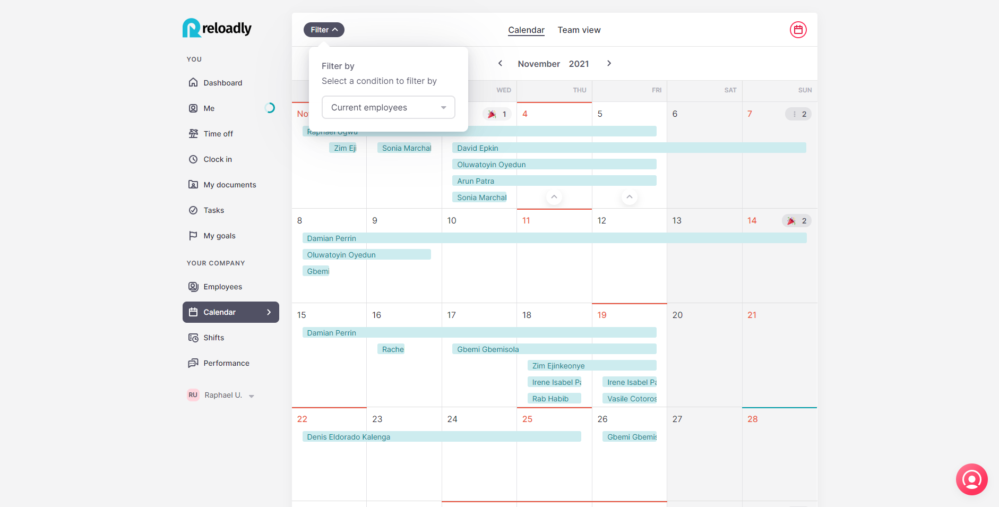
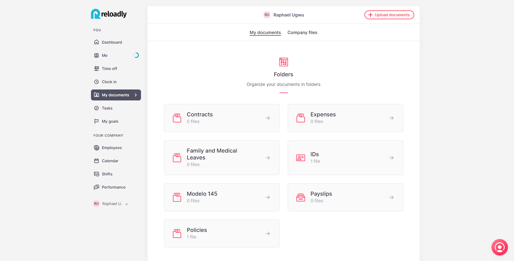
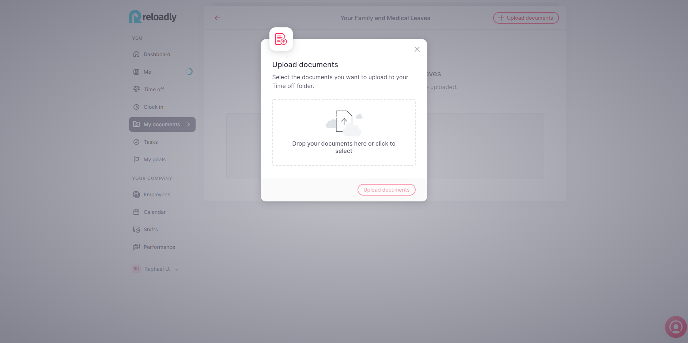
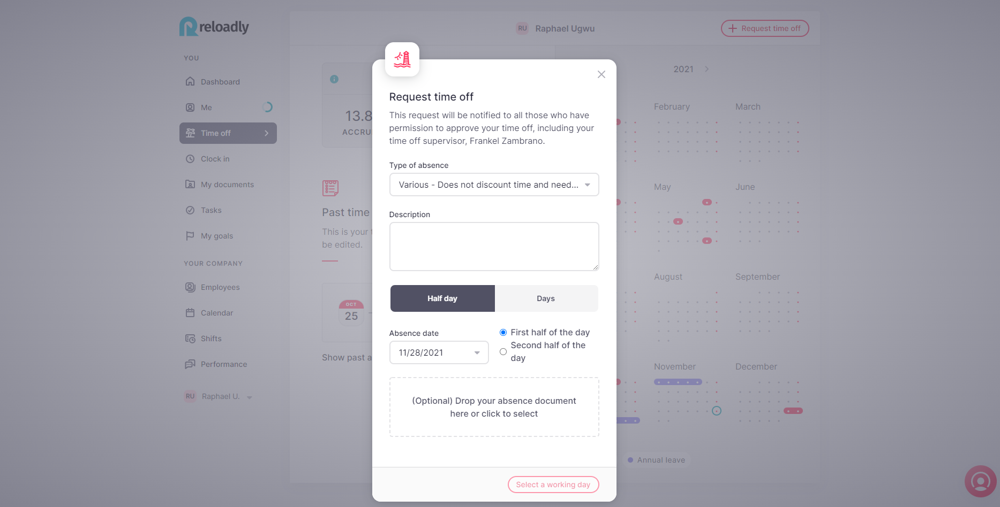
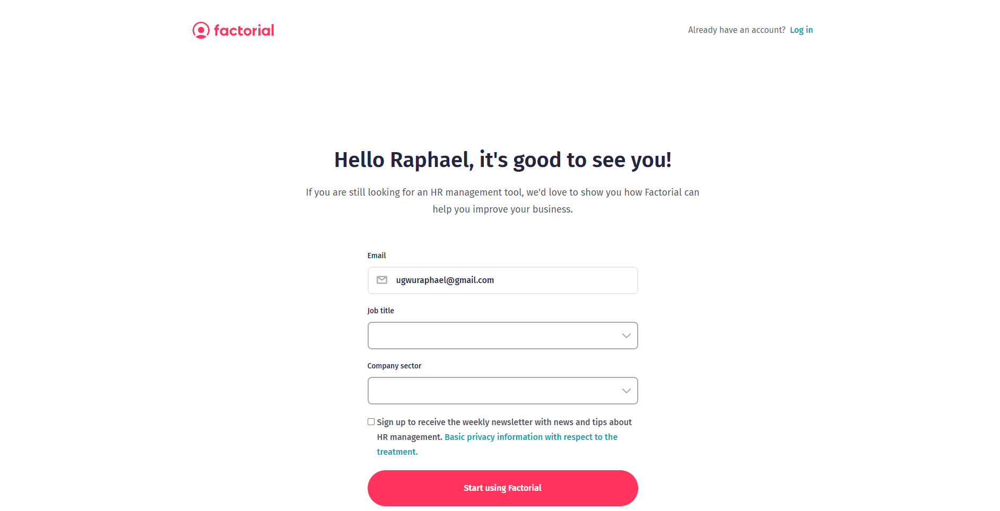
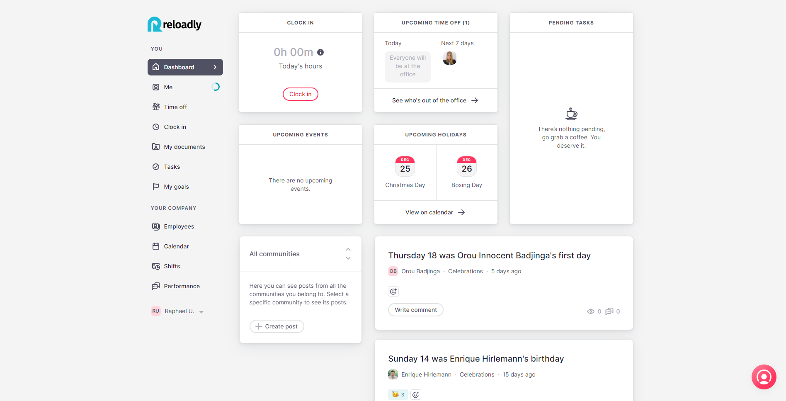
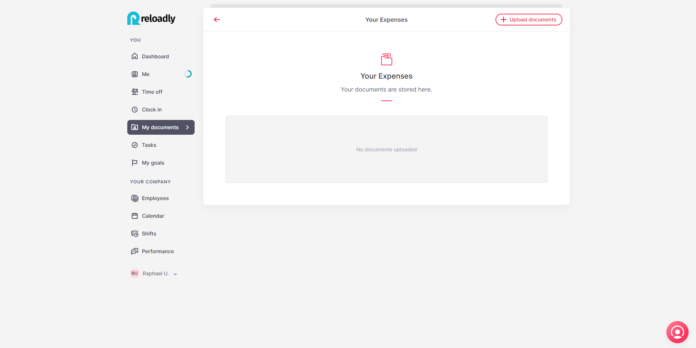
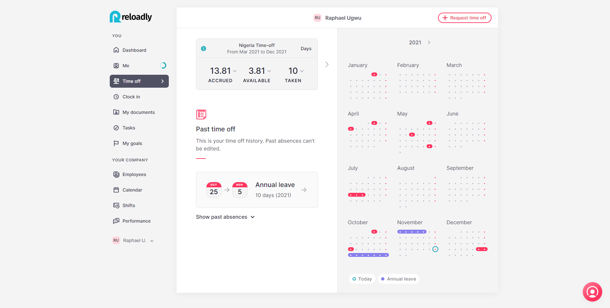
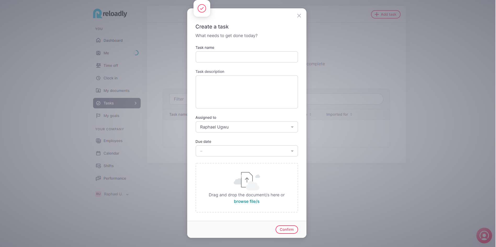

Human Resources Operation Manual — Standard Operating Procedure
This section describes the standard operating procedures of the Human Resources team.
RECRUITMENT
Depending on the position we need to cover the process varies:
- CV’s Screening
- Email to the candidates who seems to fit in the role
- Schedule interviews:
- with HR Manager
- with COO / CTO / Department’s Manager
- with HR Manager
- Give them an exercise to do for next stage
- Negotiate offer - Send them the offer letter (see below the template)
- Get it accepted and signed back
- Check background
- Rejected candidates: Always send an email to everyone who participated in the process to thank them for their time and interest and let them know the vacancy has been filled.
ONBOARDING
- Ask for their documents and telephone number:
- National ID + Passport
- Proof of address
- 2 Reference letters
- Certificates / Degrees
- Bank Account details
- National ID + Passport
- Make their contract - Get it signed. Send it to the processing agency for Spain’s employees and US ones. Add their details: ID+Passport, Bank Account, Salary, Position, start date in the communication email.
- Enroll them in health and dental insurance if they want to(Spain + US)
- Have them signed the NDA & Non Compete Agreements
- Schedule meetings:
- First day
- With their Manager: Welcome and introduction
- HR Manager: Values+Culture+Policies explanation
- With their Manager: Welcome and introduction
- First week:
- Follow up meeting
- Buddy program: Daily meeting for the first week
- Follow up meeting
- Monthly meeting follow up:
- Send them the monthly survey through Factorial (see below the template)
- Schedule meetings between: Employee+Manager+HR Manager (monthly for the first three months)
- Send them the monthly survey through Factorial (see below the template)
- First day
- Send them by email the Welcome kit + Onboarding agenda + their Reloadly email address
- Schedule their bootcamp agenda
BOOTCAMP AGENDA
First day
- Manager’s meeting
- HR Manager meeting
- Set up your Slack and Factorial account
- Find and read docs in Factorial: Policies folder: - Attendance/Factorial/Kitchen/Expenses
- Start with the PRODUCT BOOTCAMP self-studying email sent to you by the customer success team
- Review our Support page Articles in detail
- Write down any questions, doubts...
- Buddy meeting
Second day
- Meeting with the Head of Customer Success to resolve doubts: Customer Segmentation review
- Training videos/docs:
- Admin + website
- Metabase
- Pricing
- Moesif
- Pipedrive (for SALES only)
- Sales Navigator (for SALES team only)
- Zoom
- Set up your accounts
- Buddy meeting
- Admin + website
Third day
- API Documentation review
- POSTMAN video training:
- Introduction to API endpoints
- Make your first API call
- Meeting with the Associate Product Manager or the Tech Support Lead for resolving doubts
- Buddy meeting
- Introduction to API endpoints
Fourth day
- Start the Code Challenge
- (SALES) Meeting with the Sales and Partnership Director for Sales Navigator doubts
- Buddy meeting
Fifth day
- Finish the Code Challenge
- Reach out to key employees to gather more information and comprehension
- Reflection of what you've learned so far. Think of needs, meetings, doubts and let the Head of Human Resources know to schedule anything.
- Buddy meeting
ONBOARDING FOLLOW UP
After the onboarding process is completed, the new employee has a one-on-one with the HR team where their feedback and personal views of the onboarding and the company are sought after. Questions that are asked may include:
How satisfied were you with the onboarding in general?
The information given before arrival
Who would you say is your knowledgeable point of contact in the company?
What could have made your first day better?
How would you rate the preparation of manager? The team? Reloadly?
Is there any additional introduction and training for internal systems and general operating practices you feel you may need?
- Are there any specific tools or training sessions that you think would help you be more successful?
- Do you feel like you’ve received access to all of the information, tools, and resources you need to complete your responsibilities?
Is there anything missing?
What would you like to accomplish in the next 30 days?
- If a friend of yours was going to start working with your organization, what would you tell them to expect during their first day and week?
Describe your onboarding process in one sentence
How likely are you to recommend your organization as an employer after your first weeks on the job?
After the new employee's first quarter at Reloadly, a second follow-up is conducted by the HR team - usually with the employee's manager. Ths is to ensure that the employee's initial expectations as well as other needs are being met. Discussions may include:
- What’s going well so far? Describe some of your best experiences.
- Is this role what you thought it would be? How has it differed from your initial expectations?
- Are you experiencing any challenges in particular that we can assist you with?
- Do you have enough time to do your work? Do you have too much or too little time?
- How can I help you learn and improve? How can the organization support your growth and success?
- Do you feel you have the information, tools, and resources you need to do your job successfully?
- Are you comfortable asking questions about work? Who do you ask? Are there any introductions we can make?
- Are you feeling comfortable within the organization in general? Do you feel like you have a good understanding of your role within the organization?
- Is our organization’s mission clear, and do you see how your job supports that mission?
- Do you have any suggestions for, or do you see any weaknesses in specific systems, processes, and procedures that the organization can improve?
EMPLOYEE PERFORMANCE, ENGAGEMENT & HAPPINESS
For the first three months we conduct a monthly meeting to assess employee's needs, expectations, suggestions, needs, and performance. We also conduct a Performance/Engagement/Happiness survey every year.
OFFBOARDING PROCEDURE
- Schedule a meeting to gather information about the reasons they are leaving, what we could have done differently, what they appreciate from us.
- Agree on the date they are leaving - Resignation letter + Resignation letter Acceptance
- Open a replacement process
- Open a hand over process: Initiate knowledge transfer
- Announce the departure to the team or concerned employees
- Recover any material/device/documents
- Notify payroll
- Termination paperwork (Clerky)
- Remove accesses to systems:
- Revoke from Admin (Chief Technology Officer)
- Remove from PipeDrive and assign leads to other account managers (Head of Customer Success)
- Remove from user portal balance and disable account (Head of Customer Success / Associate Product Manager)
- Change Metabase Password (Associate Product Manager / Chief Technology Officer)
- Remove from Sales Navigator Premium (Head of Human Resources / Chief Executive Officer)
- Remove from Moesif (Head of Customer Success)
- Reset email account (Head of Human Resources / Associate Product Manager)
- Forward emails to manager and download drive documents (Head of Human Resources)
- Remove DocuSign account (Head of Finance / Head of Human Resources)
- Remove from Slack (Chief Technology Officer / Head of Human Resources)
- Remove from Axa / Factorial (Head of Human Resources)
- Check provider contacts (Sales and Partnerships Director, Associate Product Manager, Vice-President - Global Sales and Partnerships)
- Barcelona Office Access (Associate Product Manager / Product Manager)
- Remove Dialpad access (Associate Product Manager, Chief Technology Officer)
- Remove from website, LinkedIn, and organisation chart
- Finalize payroll (Head of Finance)
- Clerky termination paperwork (Chief Executive Officer / Head of Human Resources)
BUDDY PROGRAM POLICY
Who is a buddy?
A buddy is someone who partners with a new employee during their first days of employment. The purpose of new employees being assigned a buddy is to help welcome employees and reaffirm their decision to join Reloadly. It provides new employees with a reliable, motivated, single point-of-contact for their basic questions regarding their work experience at the company. It also helps establish orientation as a process, rather than a single learning event.
Objective:
- Give advice and guidance regarding the day-to-day aspects
- Offer encouragement and knowledge resources, as they help introduce the new employee to the Reloadly culture.
- Build up a relationship
- Be supportive and human
Why have a buddy?
- Reduce the initial confusion and uncertainty faced by all new employees − Build up a relationship
- Enable new employees to become knowledgeable about department practices and organizational culture in a shorter period
- Ensure that routine queries regarding basic operational issues are dealt with expeditiously − Increase the new employee’s self-confidence allowing him/her to focus on adding value to the organization
What the Buddy Expects From their New Employee
- The new employee will receive constructive criticism in good spirit
- The new employee will display a “coachable” attitude
- The new employee will display an eagerness to learn
Buddy Responsibilities
- Contact and meet with the new employee everyday for the first week (for 15-30 min each day).
- Continue with a fluent contact for the next whole month. Ideally to continue doing it every day for some minutes or three days per week for the first month.
- Establish a rapport with the new employee.
- Act as an informational resource on policies and procedures.
- Help socialize the new employee to Reloadly guidelines, norms and culture. − Answer general/routine questions.
- Make introductions.
- Ensure an open communication between the new employee and the buddy, respecting confidentiality.
- Call/email questions, as needed
- Basically, be empathetic and treat them as you would have liked to be treated.
ATTENDANCE POLICY
In this section, you can find Reloadly’s rules for employee attendance. It covers situations such as absenteeism, tardiness, sick leave, vacation, and appointments. Reloadly believes that it is important to have the chance to take some time off when needed but every employee must be mindful of the responsibilities of their role, and their importance to their team.
When planning time off, employees should consider the work they are committed to delivering and propose to their manager a plan of action for their absence (e.g. who will absorb their work while they are out of office, how will this impact their team members, any goals they have set for that quarter, etc.). Employees are responsible for presenting their coverage plans to their managers and managers should take this information into account prior to approving time off.
As Reloadly is a worldwide company, we are first going to explain the general concepts related to attendance and time off policies and then we will specify all details and numbers that apply to every country you may be working from. We are implementing a platform on Factorial - an all-in-one human resource management software. With Factorial, we manage all these items and centralize information and requests, clock in, surveys, documents, etc.
You will get a notification when it is all set, from that point: All requests must go through this platform, besides contacting the relevant person for each issue to be aware of and discussed when needed.
In the event of absence of Factorial software: Any application must be sent to HR department indicating:
- Your Name and Surname
- Department
- Manager in line
- Reason for request
- Dates
- Attach certificate/documentation if needed
ATTENDANCE
The company recognizes that an occasional absence may occur. An employee’s absence will be considered excused if covered by policy and the employee provides proper and timely notification deemed satisfactory to their Manager or HR department, as well as always managing this absence through Factorial platform attaching the corresponding documentation. Timely notification means calling in on the day of absence or providing advance notice for absences which can be anticipated.
An employee’s absence will be deemed unexcused when an employee fails to call in, gives a late notice, fails to give advance notice for an absence which could be anticipated. Unexcused absences are subject to corrective discipline or termination as defined in policies on discipline and separation of employment.
Excessive absenteeism is defined as two or more instances of unexcused absence in a calendar month. Such excessive absenteeism is subject to corrective discipline. Any eight instances of unexcused absenteeism in a calendar year are considered grounds for discharge.
PAID TIME OFF (PTO)
It is paid time off from work that employees can use for personal matters. Employees might request PTO to take a vacation, visit with family/friends, go to a doctor’s appointment, or simply stay home and recharge.
- Only employees who have been working in Reloadly for at least 3 months are entitled to request vacations. Before the probationary period ends it is not permitted.
- The notice period to request holidays is 1 month, minimum, in advance so everything can be organised and set.
- The Company’s holiday year runs from Jan 1st to December 31st. Any untaken entitlement will be carried over to the following year, up to the 31st of March. Any untaken day after this date will be lost.
Each department’s manager will study and approve the requests. This means that the manager has to:
- Check who else is off during the requested dates. Depending on the team you belong to we’ll have to take into consideration the following:
- For the Integration team: Only one person can be off at a time.
- For the Product developers team: Only two people can be off at the same time. Also, there are employees in the engineering team who can not be off at the same time due to the functions they undertake (Front-end engineering team)
- For the Customer Success team: Only one person can be off at a time. - For the Sales team:
- At our Miami office, there can only be one person at a time.
- Also, there are employees in the sales/procurement team who can not be off at the same time due to the functions they undertake: (Vice-Presidents of the Sales and Procurements teams respectively)
Check if there is any important deployment/task to be completed by the requester and assess if it can be done by the rest of the team or not.
- Check who else is off during the requested dates. Depending on the team you belong to we’ll have to take into consideration the following:
CHECKING AN EMPLOYEE'S CALENDAR
Viewing an employee's schedule via Factorial
Only in exceptional cases will apply: With prior approval, employees are permitted to take PTO days before they have accrued the proper balance, which may result in a short term negative PTO balance. To qualify for the negative PTO exception, both the employee’s manager and HR must approve.
If the employee leaves the company with a negative PTO balance, the difference will be deducted from the employee’s final salary/settlement. All leave must be pre-authorized by the Company. Taking leave without authorization will be considered a gross misconduct offence.
Taking leave despite a declined request will be considered a gross misconduct offence. Gross misconduct offences may result in dismissal without notice.
PAID LEAVE (“Permisos”)
Paid Leave is a long-term leave during which the employee can be paid by the company or the social security for a variety of reasons such as parental leave, long-term injury, illness, or public duty or marriage.
Sick Leave
Paid Sick Leave is time off for employees to be used for their personal medical treatment. On the employee’s second day of sick leave, the employee, unless there is an obvious and justified impossibility, must arrange an appointment with medical personnel of the public health service or mutual society (Médico de cabecera - Family doctor) and request a sick leave medical certificate.
Once the employee has received the medical certificate, they must send it through Factorial within the three (3) business days following its issuance. To send it: Go to My documents in the left side of your Dashboard Factorial account - Click on the My Family and Medical Leaves folder - once In the folder, click on the top right corner: + Upload documents - Drag your justification or click to select it - Click on Send notification to Sonia - Upload document.
Logging time off
Uploading documents when logging time off
The sick leave medical certificate will contain the data regarding the sick leave: the employee's details, the date on which sick leave began, the contingency that caused the sickness or injury, the estimated duration of the process and, if applicable, the date of the next medical examination. The employee must attend ongoing medical appointments as requested by the doctor in order to determine whether they will remain on sick leave, and for how long.
If the employee must remain on sick leave, the doctor will issue a sick leave confirmation medical certificate (Parte de confirmación de baja), while if an employee is medically discharged, the doctor will issue a discharge medical certificate (Parte médico de alta).
Whether the employee continues on medical leave or is discharged, the employee must send the medical certificate provided by the doctor to HR department so that Human Resources may process it with social security, within the following periods:
- In case of sick leave confirmation medical certificate: three (3)business days following its issuance;
- In case of discharge medical certificate: twenty-four (24) business hours following its issuance; or
- In case of very short disability, the doctor issues the sick leave medical certificate and the discharge medical certificate at the same time: twenty-four (24) business hours following the discharge.
Requested hours off for medical appointments
Click on the left bar side: Time off, then on the top right corner: +Request time off and fill up the information asked:
- Type of absence: Various
- Description: Describe the appointment you have, the time it is scheduled and the time you will be absent.
- Choose if it’s a whole day or half day (for hours) and then the date. Click on Request.
Requesting half day
The company will send the medical certificate to the Social Security National Institute ("Instituto Nacional de la Seguridad Social") no later than 3 business days after receiving the report from the employee.
OUT OF OFFICE SLACK SET UP
Same as email, employees need to set up their Slack status to let people know they won’t reply.
Announce your status: Let everyone know where you are and when you’ll be back by updating your custom status a few days before your planned departure, and during your time off. It appears everywhere your name does, including your user profile and any message you’ve sent in Slack. Illustrate it with an emoji to indicate that you’re offline or taking a road trip, and let people know the date when you’ll return in the status text.
How to do it?
From your computer, click on your name in the upper-left corner of your sidebar, then select "Set a status". On our mobile apps, tap the You option on the bottom tab bar, then edit your status directly from there.
You can also set the expiration date and time of your message, so that your vacation status, for example, disappears when you’re back to work.
Leave notes in reminders: Reminders in Slack are exactly that—messages reminding you or someone else to do anything you need at any future time or date you choose. Set them before you leave to remind yourself to do various things when you return, or ask others to set them for you if anything comes up while you’re gone. You can always ask Slack to remind you later about a particular message or conversation.
POLICIES BY COUNTRY
Now, we are going to detail what applies, according to the law, to every country where Reloadly’s employees are working from. Besides this, anything not specified can be studied and discussed with the HR department. In the following cases, employees will be entitled to be absent from work provided that prior notice and justification is given to the company.
Colombia
- Annual leave: The employees are entitled to 15 days of vacation each year.
Maternity leave: Female employees are entitled to maternity leave for a total of 14 weeks. Two of these weeks must be taken before the expected date of birth and the other 12 weeks after the child is born.
Nevertheless, the female employee can choose to use only one week prior to the expected date of birth, and have 13 weeks after the child is born.
If there is a multiple birth, the mother will be granted two additional weeks of maternity leave. In addition, for a premature birth, the mother will be granted 14 weeks leave from the estimated date of birth. Therefore the mother will have 14 weeks leave in addition to the time taken prior to the expected date of birth.
- Paternity leave: A father is entitled to eight working days.
- Marriage leave: Employees are entitled to 5 days.
France
- Annual leave: When an employee works full time (Monday to Friday), he earns 2.08 days of vacation every month, which means, for a full worked year: 2.08*12 = 25 working days per year.
- Maternity leave: Maternity leave is 16 weeks per child (6 weeks before and 10 weeks after the birth).
- Paternity leave: Paternity leave is 11 consecutive calendar days in the case of a single birth and 18 days in the case of multiple births, as from the birth of the child. Employees cannot split this leave up. It can be together with the three-day leave for the birth of a child.
- Marriage leave: Four days for their own wedding (without distinction between civil or religious ceremonies).
India
- Annual leave: Employees in India are entitled to 18 days of vacation leave.
- Sick leave: Employees benefit from up to 10 days of sick leave.
- Maternity leave: Female employees in India are entitled to 12 weeks of maternity leave, and can be taken as early as 8 weeks prior to delivery.
Indonesia
- Annual leave: Employees are entitled to 12 days of vacation leave.
- Sick leave: Employees also benefit from up to 10 days of sick leave.
- Maternity leave: Female employees in India are entitled to 12-26 weeks of maternity leave, and can be taken as early as 8 weeks prior to delivery.
- Paternity leave: Male employees are entitled to thirty (30) days.
Kenya
- Annual leave: The Employment Act provides for annual leave to all workers on completion of one year of service. The full time workers are entitled to 1.75 days of annual leave for one month of service. This means 21 working days for 12 months of service.
- Sick leave: In accordance with the Employment Act every worker is entitled to up to 14 days per year.
- Maternity leave: Female workers are entitled to 3 months (91 calendar days) on the birth of a child.
- Paternity leave: Paternity leave is two weeks/14 working days.
Lebanon
- Annual leave: An employee in Lebanon is entitled to 15 days' annual leave.
- Maternity leave: Pregnant employees are entitled to 10 consecutive weeks; this period will include the days before and after delivery date.
- Paternity leave: Employees are entitled to up to three days when they give birth.
- Marriage: Employees are granted one-week for their marriage, and this is only for “one time” during their employment with the company.
Moldova
- Annual leave: Employees in Moldova are entitled to 28 days of vacation.
- Maternity leave: Female employees are generally entitled to maternity leaves of 70 calendar days before the birth and 56 calendar days after. In case of complicated child deliveries or giving birth to two or more children – 70 calendar days.
Nigeria
The Labour Law in Nigeria is regulated mainly by the Labour Act (Laws of the Federation of Nigeria 2004). The Labour Act governs the terms and conditions of employment such as working hours, holidays, and rest periods, wages, overtime, employment relationships. The other acts that govern employment relationships are the Employees’ Compensation Act 2010, Public Holidays Act, 1979, etc.
- Annual leave: In Nigeria all employees are entitled to 20 days of vacation.
- Sick leave: An employee shall be entitled up to 12 working days in any one calendar year during absence from work caused by temporary illness.
- Maternity leave: A pregnant employee is entitled to 12 weeks. Out of this 12-week period, 6-week leave is taken after delivery. The leave may begin 6 weeks before delivery after providing a medical certificate from a registered practitioner confirming that the delivery may take place within 6 weeks and stating that she should not or cannot work.
- Paternity leave: Paid paternity leave is available in the Lagos and Enugu States of 2 weeks and 3 weeks respectively.
Singapore
- Annual leave: An employee is entitled to 12 days of annual leave.
- Sick leave: Employees are entitled to 14 days of sick leave.
- Maternity leave: As a working mother, you will be entitled to 12 weeks of maternity leave - Paternity leave From 1 January 2017, working fathers are entitled to 2 weeks.
Spain
- Annual leave: In Spain all employees are entitled to 23 days of vacation. It works out to a monthly accrual of 1.9 vacation days. Vacation is accrued while employees are on paid leave status, including sick leave, vacation, etc.
Maternity leave:
16 weeks: 6 of them must be taken compulsorily uninterruptedly immediately after the birth. 4 of these weeks can be taken before the date of due.
The other 10 weeks can be taken in weekly periods within the following 12 months after the birth date. Special rules apply in case of adoption, foster care, disability of the child, multiple birth/adoption/foster care or when the newborn requires hospitalization after birth.
Paternity leave:
16 weeks: 6 of them must be taken compulsorily uninterruptedly immediately after the birth.
The other 10 weeks can be taken in weekly periods within the following 12 months after the birth date.
- Marriage: 15 calendar/national days (that is, including weekends and holidays). The 15 days starts on the first working day following the wedding day (e.g. for M-F employees, if you get married on a Saturday, you start counting the 15 days on Monday).
- Other cases:
- Family death, accident, or serious illness: 2 days - This includes hospitalization or surgical intervention without hospitalization requiring home rest. If the employee needs to make a trip of more than 400km long to visit the relative, the term will be 4 days instead of 2.
- Move from one's main residence: 1 day. To comply with an inexcusable duty of public and personal character (for example, mandatory attendance at a trial or jury service, voting, renewal of an ID): the time needed.
United Kingdom
- Annual leave: The annual statutory minimum leave in the UK is 28 days per year.
- Maternity leave: Employees are entitled to take ``Ordinary Maternity Leave” which is up to 26 weeks leave, non compulsory. Two of them are compulsory and must be taken after the birth.
- Paternity leave: You can choose to take either 1 or 2 weeks. You get the same amount of leave if your partner has a multiple birth (such as twins). You must take your leave in one go.
South Africa
- Annual leave: Every employee is entitled to 15 working days per annum.
- Sick leave: An employee is entitled to 2 weeks off.
United Arab Emirates
- Annual leave: Employees are entitled to an annual leave of:
- 2 days per month, if they have completed six months of service and up to one year
- 30 days, if they have completed one year of service.
So annual leave will be first set as 24 days (2 days per month) after 6 months of work are completed and the second year will be increased up to 30 days per year.
USA
- Annual leave: Employees in the USA are entitled to 14 days of vacation leave.
- Sick leave: An employee is entitled up to 6 days off in the case of illness or injury, if they present a medical certificate to their employer.
- Marriage leave: An employee is entitled to 1-3 days of marriage leave under the national regulations.
FACTORIAL SOFTWARE
Factorial is an all-in-one HR management software used to track employee performance, behavior and events amongst other things. At Reloadly, we use Factorial to manage employee activities. Below is a brief summary on the intricacies of Factorial
- Attendance: Clock In - Clock Out
- Holidays and Absences: Team Calendar
- Document Management: Policies
- Payroll
- Expenses
- Expenses and Communication
- Tasks
Signing up on Factorial
You can sign up on Factorial by heading to the sign-up page and filling it out with the necessary information
Signing up for a Factorial account
Once this is done, you will receive an email prompt with a link for you to complete the sign up process. Clicking the link will re-direct you to your Factorial dashboard
Factorial Dashboard
Uploading documents
 Uploading Documents
Uploading Documents
Logging Expenses
Expense logging
Clocking in and out
 Clocking in and out
Clocking in and out
Logging Paid Time Off (PTO)
Logging paid time off
Logging and Viewing Tasks
Logging tasks